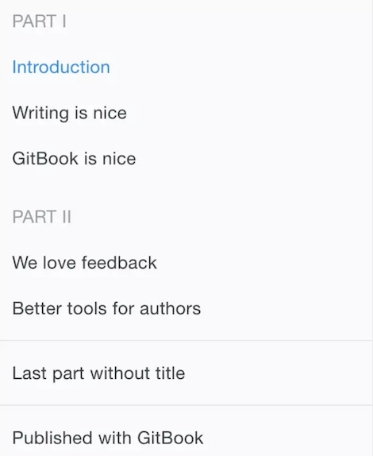

GitBook 准备工作
1、安装 Node.js
2、安装 GitBook
npm install gitbook-cli -g
gitbook -V
3、安装 GitBook 编辑器
brew cask install gitbook-editor
开始使用
1、cd写书的目录
gitbook init
//SUMMARY.md 书的章节目
//http://localhost:4000 预览书籍
gitbook serve
//生成网页，不开启服务器
gitbook build
2、目录结构
.
├── book.json
├── README.md
├── SUMMARY.md
├── chapter-1/
| ├── README.md
| └── something.md
└── chapter-2/
├── README.md
└── something.md
//book.json 存放配置信息
{
"title": "Blankj's Glory",
"author": "Blankj",
"description": "select * from learn",
"language": "zh-hans",
"gitbook": "3.2.3",
"styles": {
"website": "./styles/website.css"
},
"structure": {
"readme": "README.md"
},
"links": {
"sidebar": {
"我的狗窝": "https://blankj.com"
}
},
"plugins": [
"-sharing",
"splitter",
"expandable-chapters-small",
"anchors",
"github",
"github-buttons",
"donate",
"sharing-plus",
"anchor-navigation-ex",
"favicon"
],
"pluginsConfig": {
"github": {
"url": "https://github.com/Blankj"
},
"github-buttons": {
"buttons": [{
"user": "Blankj",
"repo": "glory",
"type": "star",
"size": "small",
"count": true
}
]
},
"donate": {
"alipay": "./source/images/donate.png",
"title": "",
"button": "赞赏",
"alipayText": " "
},
"sharing": {
"douban": false,
"facebook": false,
"google": false,
"hatenaBookmark": false,
"instapaper": false,
"line": false,
"linkedin": false,
"messenger": false,
"pocket": false,
"qq": false,
"qzone": false,
"stumbleupon": false,
"twitter": false,
"viber": false,
"vk": false,
"weibo": false,
"whatsapp": false,
"all": [
"google", "facebook", "weibo", "twitter",
"qq", "qzone", "linkedin", "pocket"
]
},
"anchor-navigation-ex": {
"showLevel": false
},
"favicon":{
"shortcut": "./source/images/favicon.jpg",
"bookmark": "./source/images/favicon.jpg",
"appleTouch": "./source/images/apple-touch-icon.jpg",
"appleTouchMore": {
"120x120": "./source/images/apple-touch-icon.jpg",
"180x180": "./source/images/apple-touch-icon.jpg"
}
}
}
}
links
在左侧导航栏添加链接信息
plugins
配置使用的插件
pluginsConfig
配置插件的属性
//SUMMARY.md GitBook 的章节目录 通过 Markdown 中的列表语法来表示文件的父子关系
# Summary
* [Introduction](README.md)
* [Part I](part1/README.md)
* [Writing is nice](part1/writing.md)
* [GitBook is nice](part1/gitbook.md)
* [Part II](part2/README.md)
* [We love feedback](part2/feedback_please.md)
* [Better tools for authors](part2/better_tools.md)
. 如下图
//通过使用 标题 或者 水平分割线 将 GitBook 分为几个不同的部分
### Part I
* [Introduction](README.md)
* [Writing is nice](part1/writing.md)
* [GitBook is nice](part1/gitbook.md)
### Part II
* [We love feedback](part2/feedback_please.md)
* [Better tools for authors](part2/better_tools.md)
---
* [Last part without title](part3/title.md)
. 如下图 
3、插件 GitBook 有 插件官网，默认带有 5 个插件，highlight、search、sharing、font-settings、livereload，如果要去除自带的插件， 可以在插件名称前面加 -
//添加插件
{
"plugins": [ "github" ],
"pluginsConfig": {
"github": {
"url": "https://github.com/your/repo"
}
}
}
//plugin@0.3.1 指定插件版本
gitbook install ./